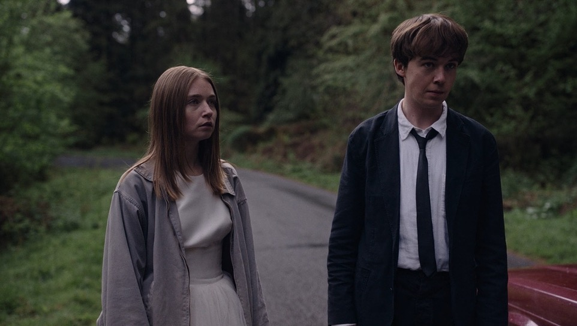
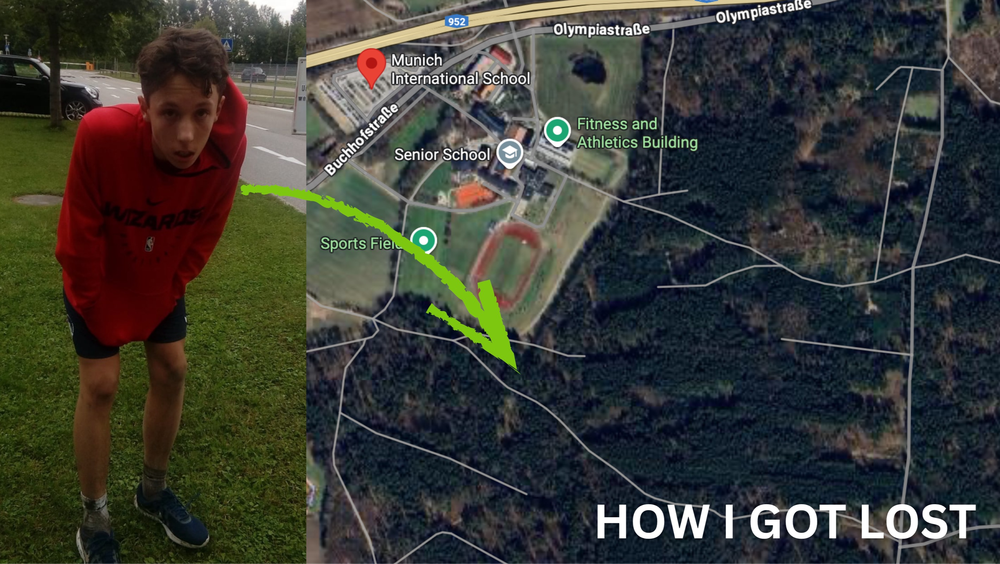
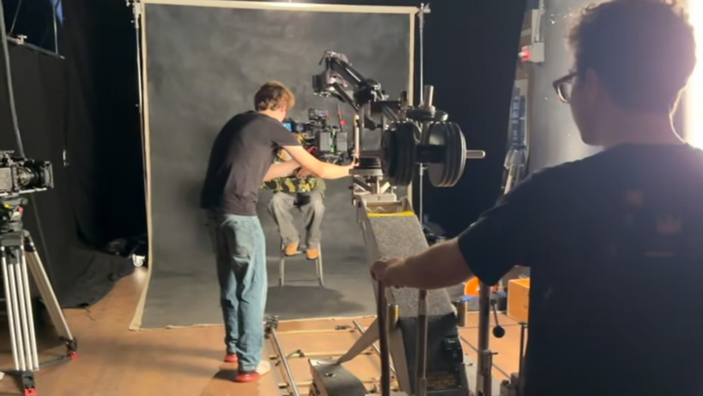

Narrative
HNowhere Near Home.
Written / Directed by Oliver Stemmler
I"Nowhere Near Home" tells the story of two feuding brothers who, after school, are left stranded, so they decide to hitchhike home



Written / Directed by Oliver Stemmler
I"Nowhere Near Home" tells the story of two feuding brothers who, after school, are left stranded, so they decide to hitchhike home


